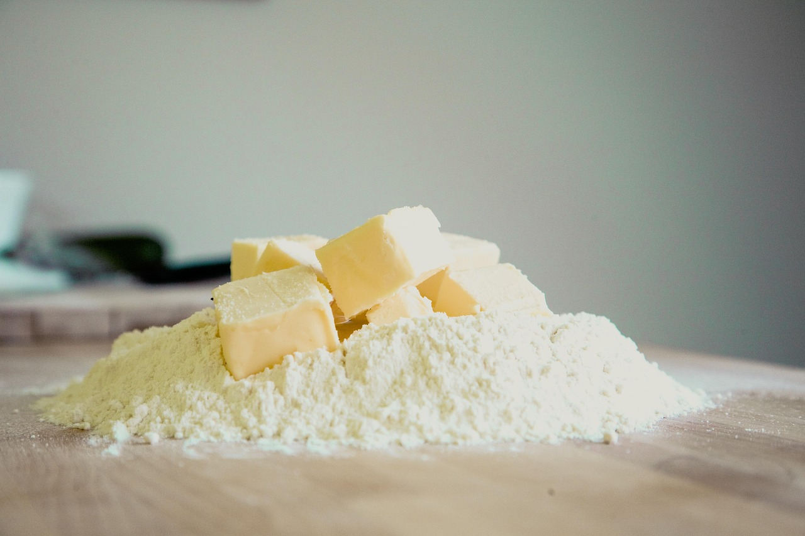
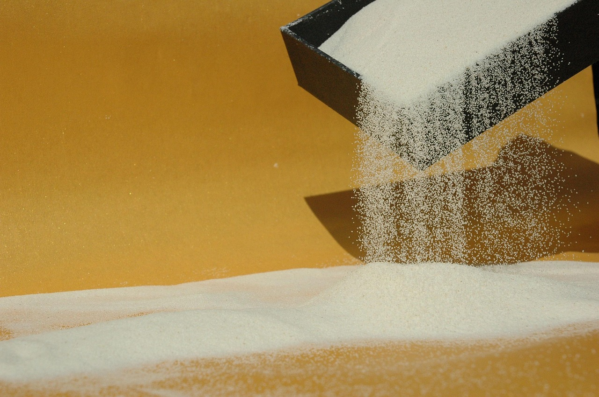
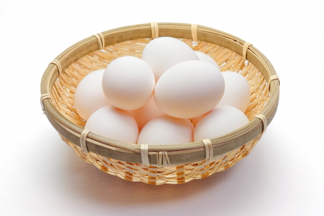
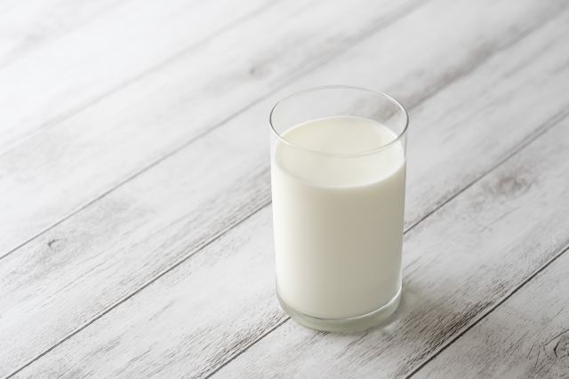

CONCEPT
-

小麦粉は、北海道産の石臼挽き全粒粉を主体に使用しています。 石臼で丁寧に挽かれた粉は、熱が加わりにくいため、小麦本来の香りや旨みがそのまま残ります。 手に取るとほんのり温もりを感じるようなしっとり感があり、焼き上げた際には、 生地に繊細なコシと優しい甘みが広がります。 Noir Blancのパンケーキが一口目から「ふわり」と広がる秘密は、この粉にあります。
-
使用するバターは、国産の発酵バター。 乳酸菌で発酵させることで、普通のバターとは一線を画す、 芳醇な香りと奥行きあるコクを持ちます。 焼き上げた瞬間に立ち昇る香りは、食べる前から幸福感をもたらし、 口に含んだあとにも、ふんわりと鼻に抜ける余韻を残します。 バターは、Noir Blancのパンケーキにとって“香りを演出する役者”でもあります。
 -

小麦粉は、北海道産の石臼挽き全粒粉を主体に使用しています。 石臼で丁寧に挽かれた粉は、熱が加わりにくいため、小麦本来の香りや旨みがそのまま残ります。 手に取るとほんのり温もりを感じるようなしっとり感があり、焼き上げた際には、 生地に繊細なコシと優しい甘みが広がります。 Noir Blancのパンケーキが一口目から「ふわり」と広がる秘密は、この粉にあります。
-
牛乳は、脂肪分を控えめにした低温殺菌のものを使用。 高温処理ではなくゆっくりと時間をかけて殺菌することで、 本来の風味や栄養を損なうことなく、やわらかな乳の甘さを引き出します。 パンケーキの生地に混ざることで、口どけの軽さと奥行きのある余韻を同時に実現し、 最後の一口まで“重たさ”を感じさせません。
